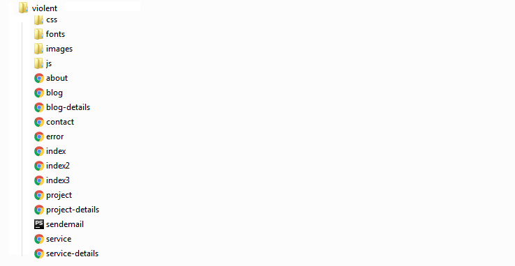
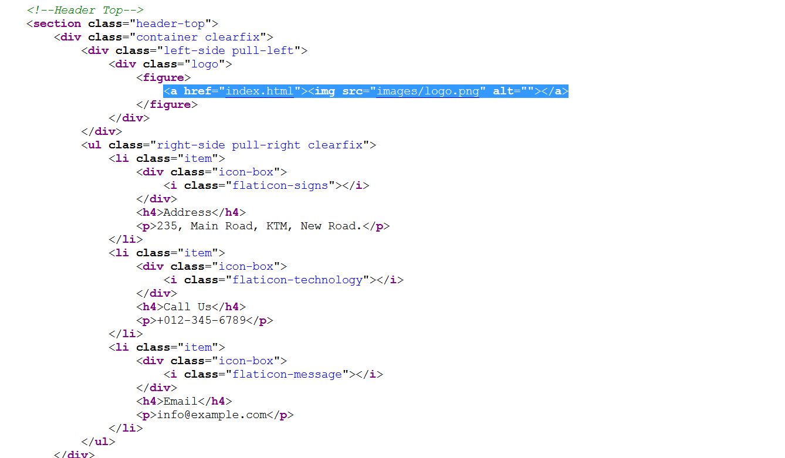
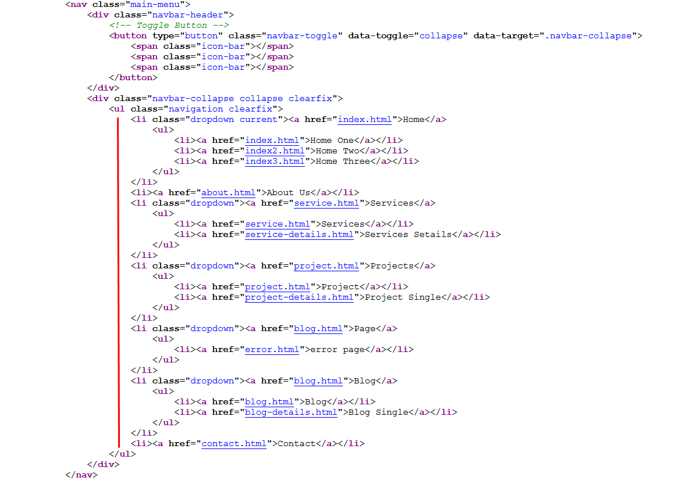
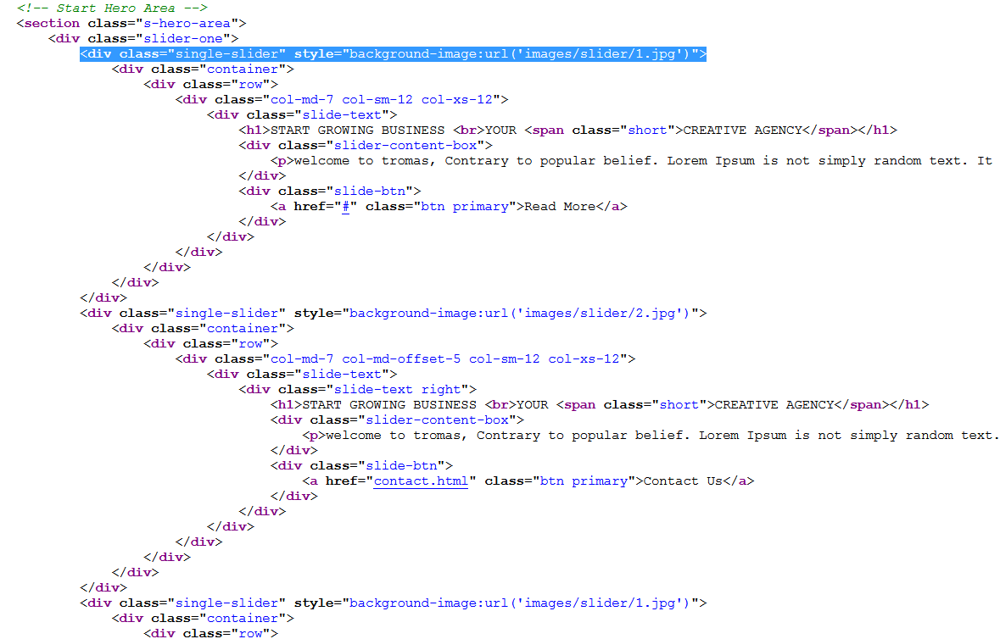

Allied Multipurpose HTML Template
Allied is simple and elegant multipurpose HTML template specially built for business and corporate agencies. It is responsive, cross browser compatible template with quality code and highly crafted premium features. Allied is built by using the latest bootstrap 3.x framework. Allied templates includes more than 12 well organized pages includes Home One, Home Two, Home Three, About, Services, Projects, Blog, Contacts and many other pages. Allied is the splendid mix of quality code and clean design. Allied template comes with well competed code and documentation it helps to customize your template on your need.
Template File Structure

What are key features of template?
- 12 valid HTML5 pages
- Simple elegant design
- Responsive layouts
- 3 Home page variations
- Clean and attractive pages
- About Us, 404 error page templates
- Google web fonts
- Compatible with major modern browsers
How to change Logo?
- It's very easy to change your logo. Just take a look at the below screenshot. Change the image link to your own logo.

Header Menu
- It's very easy to change menu. Just take a look at the below screenshot.

How to change Icons?
This template use 600+ font icons set from Font-Awesome
Example:
<i class="fa fa-tag"></i>
Check All Font-Awesome Icons
How to change slider?
- It's very easy to change your slider images. Just take a look at the below screenshot. Change the image link to your own slider images.

Credits
Images: Note : All images viewed in the live preview are for demo purposes only but not included with your purchase file.
jQuery
Bootstrap
Isotope
gmap
Counter
FencyBox
OWL
Official Support
Hope, this will help to change template as per your requirement.
If you have any further query, please email us at
aclthemes@gmail.com